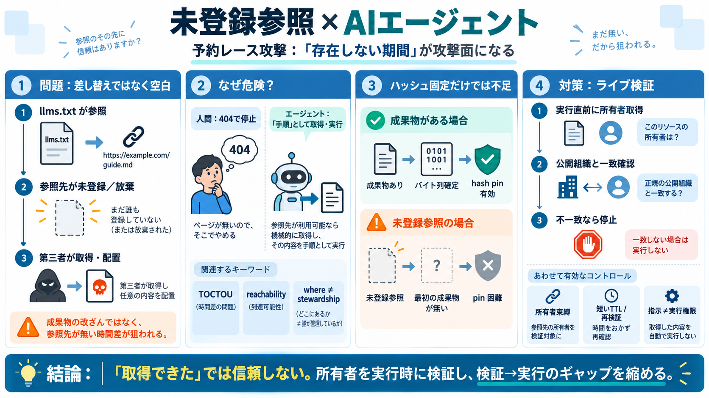

[PDF] The llms.txt Trust Model Is Broken - Cloud Security Alliance
2 Key Takeaways Independent security research disclosed in late August and early September 2026 shows that llms.txt file…

llms.txt / llms-full.txt が指す先が未登録（放棄）だと、AIエージェントは「手順」を実行してしまい、サプライチェーン攻撃に巻き込まれ得ます。
攻撃面は「差し替え」ではない
通常のハイジャックは成果物（既存パッケージ）の差し替えですが、本論点は「参照先が存在しない期間」が攻撃面になることです。
地図が「命令」になる
人間は404で終わりますが、エージェントは参照を「実行手順」と解釈しやすく、到達可能性（reachability）だけで成立してしまいます。
3つの前提が噛み合う
脆弱性は「検証可能性」と「実行時性」のギャップで発生します。特に、作成時点と取得・実行時点に時間差があるのが鍵です。
観測：複数大企業の実行
研究者が多数の企業ドメインを調査し、未登録／放棄され第三者が後から取得できる参照先を見つけたところ、複数の大手エージェントが短時間で実行しました。
「改ざん」ではなく「参照の空白」
ドキュメント自体が悪意で書かれていなくても成立します。攻撃は、後から参照名が取得されることで混入します。
ハッシュ固定は効きにくい
ピン-by-hash（ハッシュ固定）は、成果物が当初から存在しバイト列が確定している場合に有効です。本件は“存在しない期間”が主戦場のため、結びつきがズレます。
対策の中心はライブ検証
実行時に、参照名の現在の所有者がドキュメント公開組織と一致するかをライブ検証し、信頼仮定を“検証可能な事実”へ置き換える必要があります。
“何を”検証するか
少なくとも次の要素を組み合わせます：①実行直前の現在所有者の一致、②TTL/キャッシュで古さを抑える、③ドキュメントが“実行権限”にならない制御。
DNSは所在、管理者は別
DNSやDNSSEC、証明書は「通信の整合」には役立ちますが、議論の要点は「所在（where）」と「正当な管理者（stewardship）」が一致するとは限らない点です。
キャッシュが脅威を伸ばす
検証-実行の間隔が伸びる（キャッシュで再検証しない）ほど、脆弱性は長く効いてしまいます。再検証頻度と失敗時の挙動を設計に含めるべきです。
一言で結論
AIエージェントの信頼モデルは「取得できた」だけでは成立しません。未登録参照（予約レース）を前提に、実行時の所有者検証と検証-実行ギャップ解消を中核に据えてください。
2 Key Takeaways Independent security research disclosed in late August and early September 2026 shows that llms.txt file…
And in a twist of irony, any or all of these people will be using LLMs and end up subject to slopsquat/hallusquat attack…
LLM03:2025 Supply Chain is one of the OWASP Top 10 risks for LLMs and generative AI applications. It refers to vulnerabi…
Dynamic analysis tests how models actually behave. This catches risks that static analysis cannot: drift, poisoning effe…
## LLM03:2025 Supply Chain LLM supply chains are susceptible to various vulnerabilities, which can affect the integrity…